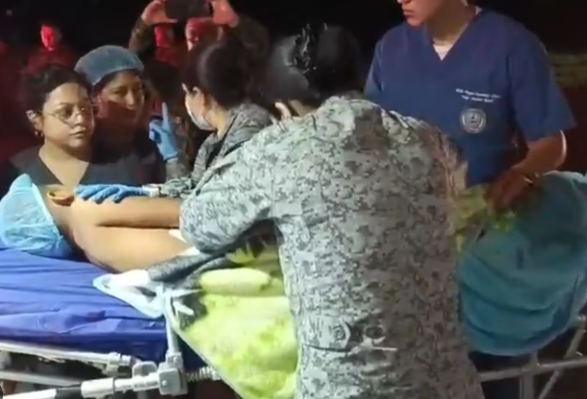

Deportes · Liga BetPlay
América de Cali se clasifica a los playoffs de la Liga BetPlay 2026
América de Cali sumó su victoria en la Liga BetPlay 2026 y se instaló entre los ocho clasificados a los playoffs del torneo. La escuadra vallecaucana es uno de los equipos más regulares del campeonato. Medellín también ganó en la misma fecha, moviéndose en la tabla de posiciones.
22 abr. 2026 · Semana
Seguridad
Cuatro jóvenes desaparecidos desde el 15 de abril son hallados sin vida en el Cauca
La Alcaldía de Jamundí, municipio del Valle del Cauca, confirmó la muerte de los cuatro jóvenes que habían sido reportados como desaparecidos. Las autoridades investigan las circunstancias del crimen.
21 abr. 2026 · La FM
